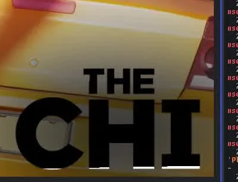
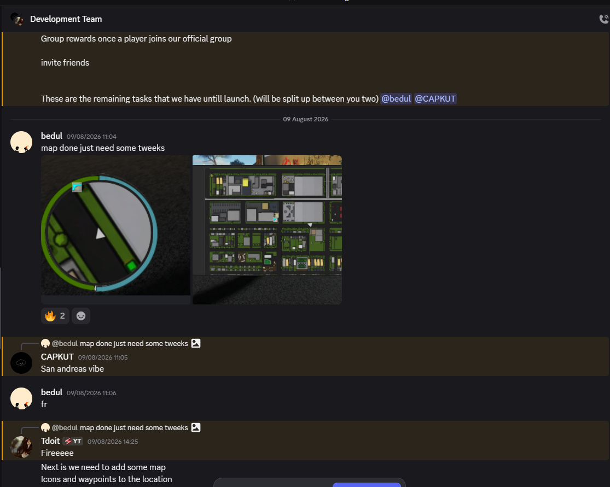
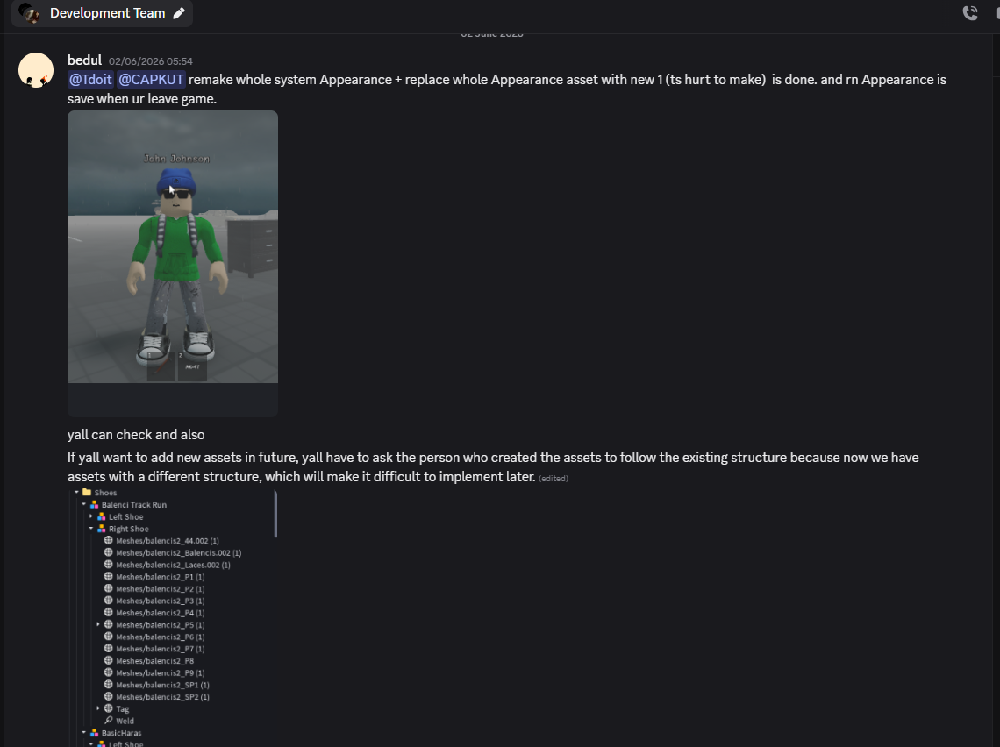
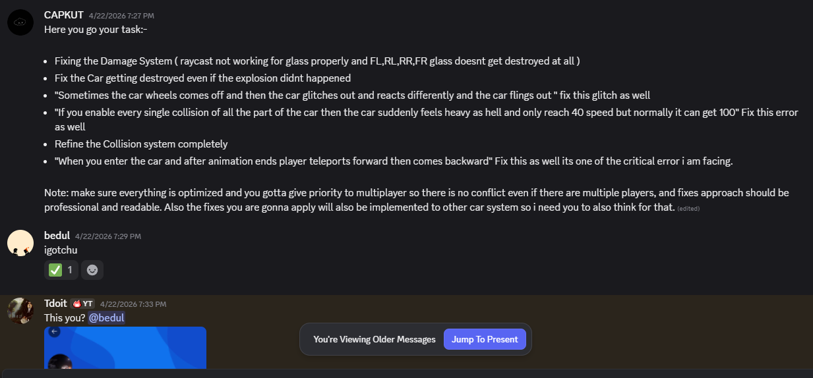
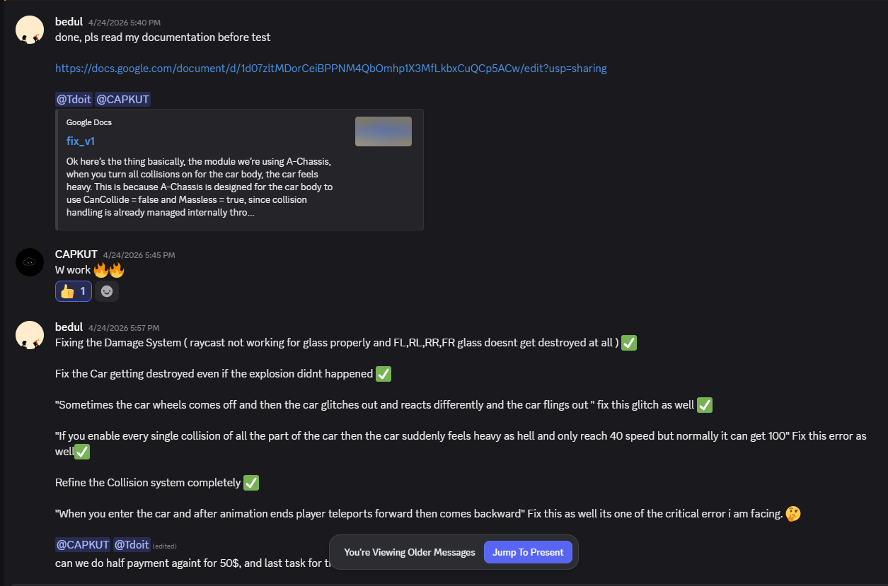
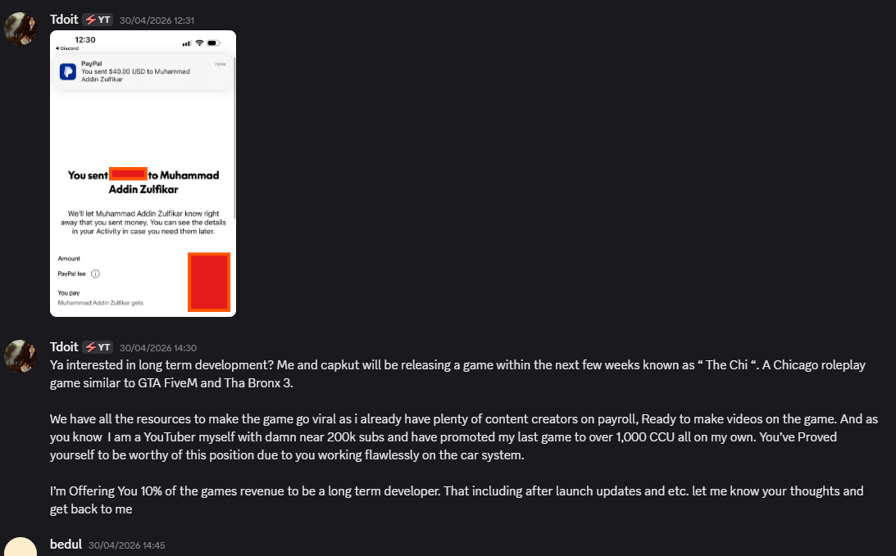

The Chi
A full gameplay rework for The Chi — rebuilding its visual identity, map and task flow, and core vehicle/combat systems into a stable, production-ready experience.
Where The Chi Started
The Chi came in as a rough concept: a driving/combat game with real potential, but no consistent visual identity and a gameplay loop that hadn't been stress-tested yet. The brief was to turn that potential into something coherent enough to support long-term development.
That meant treating the project as more than a one-off task — the work needed to hold up under real play, not just look good in a screenshot.


Turning Potential Into a Stable Build
Underneath the surface, the game had a set of interlocking problems: inconsistent visuals, a map/task layout that didn't guide players clearly, and gameplay bugs — damage, wheels, collisions, and broken state transitions — that surfaced as soon as the game was played seriously rather than just tested casually.
None of these were isolated fixes. Visual identity, map structure, and gameplay logic all had to move together for the rework to actually hold.
What I Reworked
Three fronts, tackled in parallel rather than in isolation.
Visual Identity
Refreshed the game's appearance to match a clearer, more deliberate identity — giving the project a look consistent enough to build further content on top of.
Map & Task Flow
Restructured the map layout and task progression so players could read where to go and what to do next, instead of the flow feeling arbitrary.
Vehicle & Combat Stability
Resolved the core reliability issues — damage flow, wheel physics, collisions, animation glitches, and broken state transitions — so the gameplay loop held up under real play.
From Task to Fix



A Project That Could Hold Its Own
The Chi went from a promising but unstable concept to a project with a defined identity, a readable map and task flow, and a gameplay loop that survives real play instead of just a demo run. The priority throughout was maintainability and gameplay logic, not just cosmetic polish.
Earning a Long-Term Role
The Chi started as a commission. It didn't stay one. The consistency of the rework — the fixes that actually stuck, the identity work that held together — turned into an invitation to take on a longer-term role in shaping the game's direction.
That shift is the real marker of this project: the work stopped being "finish the request" and became "help decide what this project becomes next."
